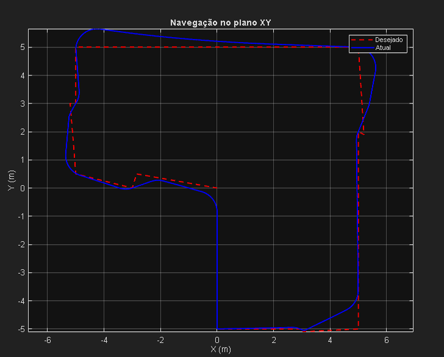
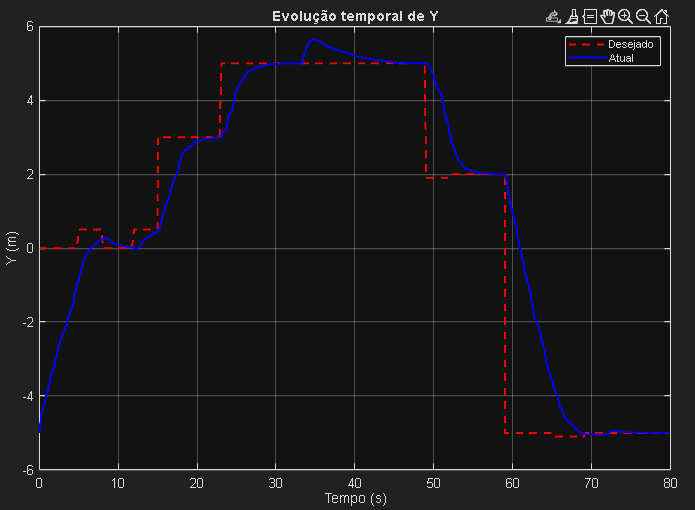
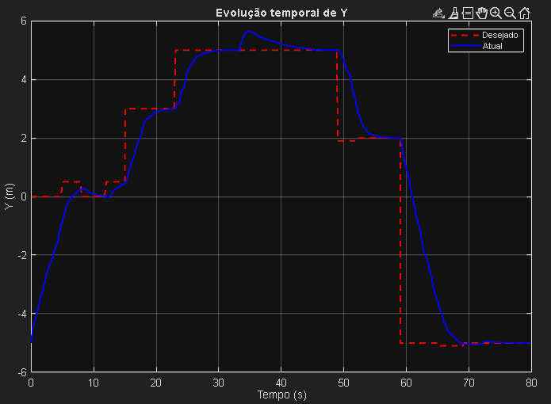
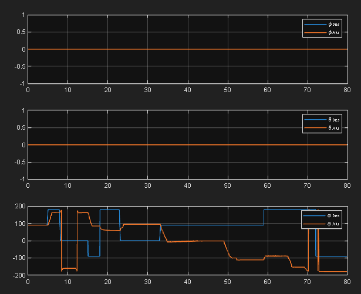
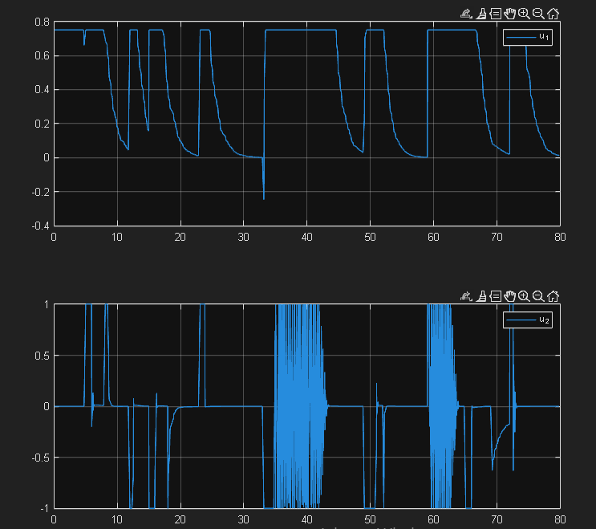
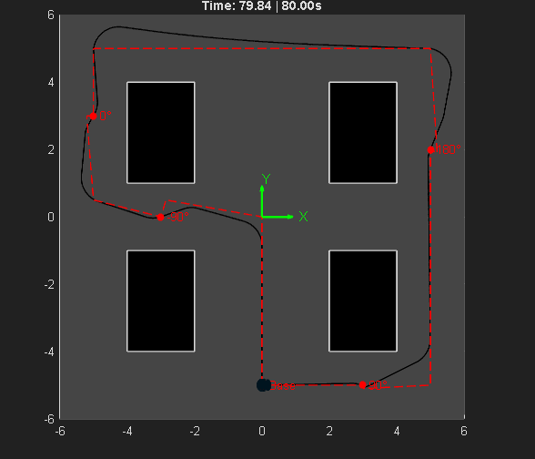

🤖 Análise de Simulação: Navegação de Robô Autônomo
Tecnologia: MATLAB
Análise de um sistema de controle cinemático para um robô móvel em um ambiente industrial, focado em seguimento de trajetória e controle de orientação.
🧠 Resumo e Objetivo do Projeto
⚙️ Estratégia de Controle
- Geração de Trajetória: Uma máquina de estados define a pose (posição e orientação) desejada em intervalos de tempo, criando um caminho sequencial.
- Controlador Cinemático: Um controlador em malha fechada calcula as velocidades linear (v) e angular (ω) necessárias para minimizar o erro entre a pose atual e a desejada.
- Atuação: Os sinais de controle são enviados ao simulador para movimentar o robô, utilizando uma estratégia de "parar-girar-avançar" para garantir o alinhamento preciso.
🎥 Simulação em Ação
📈 Análise dos Resultados da Simulação
1. Rastreamento de Trajetória no Plano XY
A imagem demonstra a alta fidelidade do robô ao seguir o caminho desejado (tracejado vermelho). A trajetória real (linha azul) é suave e acompanha a referência de perto, convertendo as curvas de 90 graus do plano em manobras fisicamente realizáveis, o que valida a eficácia do controlador de seguimento de caminho.
2. Evolução Temporal da Posição (X e Y)
 

Os gráficos mostram que a posição real do robô (linha azul) converge rapidamente para os valores desejados (linha tracejada vermelha) com sobre-sinal (overshoot) mínimo e tempo de acomodação baixo. Isso indica que o controlador responde de forma estável e eficiente às mudanças de referência, sem movimentos bruscos.
3. Controle de Orientação (Ângulo de Guinada, ψ)
O controle do ângulo de guinada (ψ) é fundamental para o alinhamento nas baias. O gráfico inferior mostra que a orientação real (laranja) segue a referência (azul) com altíssima precisão. As transições rápidas e bem amortecidas, como a curva de 180° em t=20s, demonstram a robustez do controlador de orientação.
4. Sinais de Controle (Velocidades)
Os sinais de controle revelam a lógica do sistema. A velocidade linear (u₁) diminui ao se aproximar de um alvo, chegando a zero durante as curvas. A velocidade angular (u₂) mostra picos durante as reorientações e oscilações finas durante o movimento em linha reta, indicando correções constantes para manter o robô no curso, característico de um sistema responsivo.
5. Visão Geral da Simulação
Este quadro, retirado do final da simulação, oferece uma visão completa do percurso. A linha preta sólida (trajetória real) envolve todo o circuito, passando pelas baias (retângulos pretos) e terminando próximo ao ponto final, confirmando o sucesso da missão de navegação de 80 segundos.
🏆 Conclusão e Destaques Técnicos
- Alta Precisão no Seguimento de Trajetória: O robô aderiu de perto ao caminho planejado.
- Controle de Orientação Robusto: O robô atingiu todas as orientações especificadas com rapidez e exatidão.
- Desempenho Estável e Eficiente: Os sinais de controle geraram um movimento suave e manobras eficientes.
- Próximos Passos Sugeridos: Implementar desvio de obstáculos dinâmico, otimizar a trajetória com algoritmos (A*, RRT) e integrar com sistemas de percepção (câmeras, LiDAR).